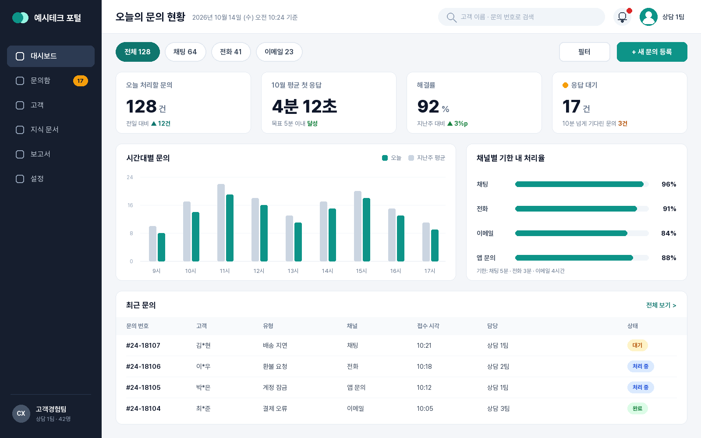

01 새 상담 화면
한 화면에서 오늘의 문의를 모두 봅니다
상담원용 웹 화면

화면: 예시테크 상담 포털 대시보드, 2026년 10월 14일 (합성한 예시 화면)
1
위: 지표 네 개
오늘 처리할 문의, 이달 첫 응답, 해결률, 대기
2
가운데: 시간대별 흐름
지난주 평균과 겹쳐 붐비는 시간을 봅니다
3
아래: 최근 문의
고객 이름은 가린 채로 보여 줍니다
메뉴 네 개를 한 화면으로
예전에는 네 메뉴를 오가며 보던 정보입니다